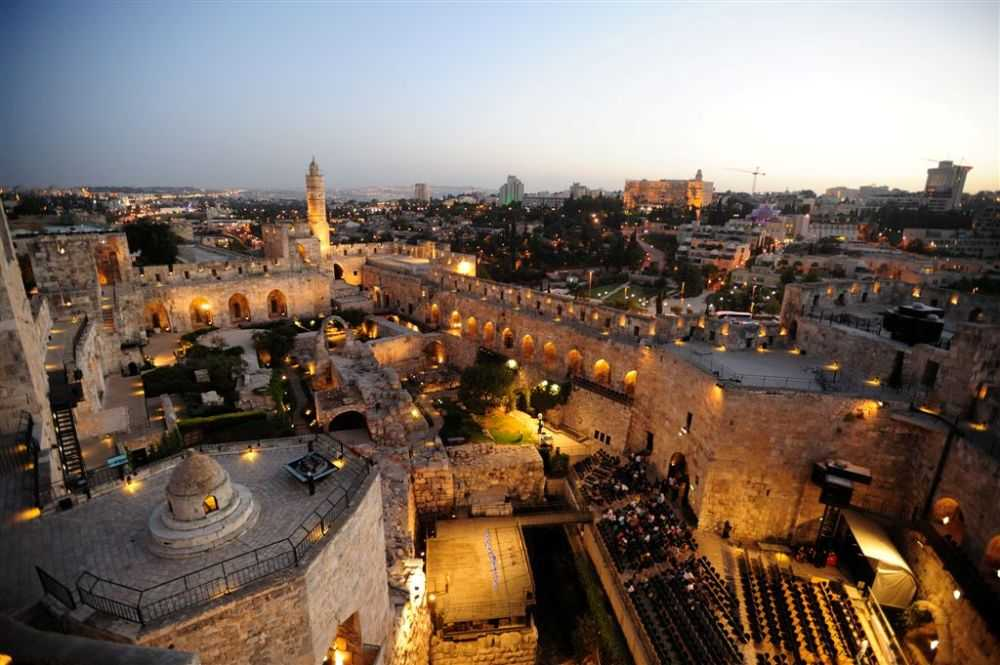

העיר העתיקה

העיר העתיקה - הלב של עם ישראל
בין חומות האבן העתיקות שוכנת מהות נצחית – קדושה החיה ונושמת מזה אלפי שנים.
דורות על גבי דורות צעדו כאן בדרכם לבית המקדש, היום אנחנו ממשיכים לצעוד כותל המערבי, אל בתי הכנסת העתיקים ואל המורשת שלא חדלה לפעום ברוח העם.
הרחובות הצרים, ריח האבן הירושלמית, והדממה שבין הצלילים – כל פרט בעיר העתיקה לוחש את סיפורו של עם שחלומו מעולם לא כבה ותשוקתו לשוב הביתה מעולם לא חדלה.